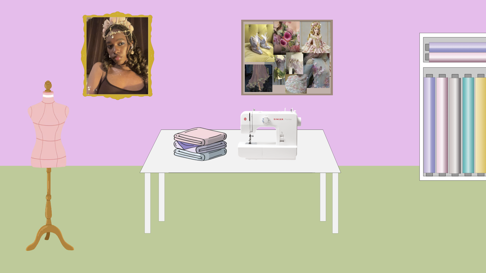

Deze website gebruikt functionele cookies. Deze cookies zijn nodig om bepaalde onderdelen van de website goed te laten werken. Deze cookies worden niet gebruikt om je internetgedrag te volgen of om persoonlijke advertenties te tonen.